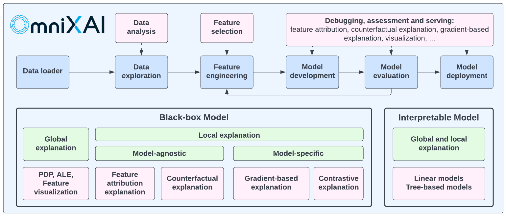

OmniXAI: An Explanation Toolbox
Introduction
OmniXAI (short for Omni eXplainable AI) is a Python library for explainable AI (XAI), offering omni-way explainable AI and interpretable machine learning capabilities to address many pain points in explaining decisions made by machine learning models in practice. OmniXAI aims to be a one-stop comprehensive library that makes explainable AI easy for data scientists, ML researchers and practitioners who need explanation for various types of data, models and explanation methods at different stages of ML process:
OmniXAI includes a rich family of explanation methods integrated in a unified interface, which supports multiple data types (tabular data, images, texts, time-series), multiple types of ML models (traditional ML in Scikit-learn and deep learning models in PyTorch/TensorFlow), and a range of diverse explaination methods including “model-specific” and “model-agnostic” methods (such as feature-attribution explanation, counterfactual explanation, gradient-based explanation, etc). For practitioners, OmniXAI provides an easy-to-use unified interface to generate the explanations for their applications by only writing a few lines of codes, and also a GUI dashboard for visualization for obtaining more insights about decisions.
Library Design
OmniXAI has five key subpackages:
omnixai.data: This package contains the classes for representing tabular, image, text, and time series data, i.e.,omnixai.data.tabular,omnixai.data.image,omnixai.data.textandomnixai.data.timeseries, respectively. For example, the explainers for tabular data use an instance ofomnixai.data.tabularas one of their inputs. The library provides simple constructors for creating instances of these classes from numpy arrays, pandas dataframes, pillow images or strings.omnixai.preprocessing: This package contains various pre-processing functions for different feature types:One-hot encoding and ordinal encoding for categorical features.
KBins, standard normalization, min-max normalization, rescaling, NaN-filling for continuous-valued features.
A pre-processing module
omnixai.preprocessing.tabularfor tabular data.Recaling, normalization, resizing for image data.
The TF-IDF transformation and token-to-id transformation for text data.
A pre-processing pipeline
omnixai.preprocessing.pipelinecombining multiple pre-processing functions together.
For tabular data,
omnixai.preprocessing.tabular.TabularTransformprovides a convenient way for feature pre-processing. One can simply use this class to transform the raw data into the training/test dataset that a particular machine learning model can consume.omnixai.explainers: This is the main package in the library, which contains all the supported explainers. The explainers are categorized into the following groups:omnixai.explainers.data: It is for data exploration/analysis, including feature correlation analysis, feature imbalance analysis, feature selection, etc.omnixai.explainers.prediction: It computes the performance metrics for classification and regression tasks.omnixai.explainers.tabular: It contains the explainers for tabular data, e.g., global explanations such as PDP, local explanations such as LIME, SHAP, MACE.omnixai.explainers.vision: It contains the explainers for vision tasks, e.g., integrated-gradient, Grad-CAM, contrastive explanation, counterfactual explanation.omnixai.explainers.nlp: It contains the explainers for NLP tasks, e.g., LIME, integrated-gradient.omnixai.explainers.timeseries: It contains the explainers for time series tasks, e.g., SHAP, MACE.omnixai.explainers.vision_language: It contains the explainers for vision-language tasks, e.g., IG, GradCAM.omnixai.explainers.ranking: It contains the explainers for ranking tasks, e.g., ValidityRankingExplainer, PermutationRankingExplainer, MACE.
For “tabular”, “vision”, “nlp” and “timeseries”, the explainers are further categorized into “model-agnostic”, “model-specific” and “counterfactual”. A “model-agnostic” explainer can handle black-box ML models, i.e., only requiring a prediction function without knowing model details. A “model-specific” explainer requires some information of ML models, e.g., whether the model is differentiable, whether the model is a linear model or a tree-based model. “counterfactual” is a special group for counterfactual explanation methods which may be either “model-agnostic” or “model-specific”.
omnixai.explanations: This package contains the classes for explanation results. For example,omnixai.explanations.tabular.feature_importanceis used for storing feature-importance/attribution explanations. All of these classes provide plotting functions for visualization, e.g., “plot” using “Matplotlib”, “plotly_plot” using “Dash” and “ipython_plot” for IPython. Explanations are categorized into these groups:omnixai.explanations.tabular: For tabular explainers, e.g., feature-importance explanation, etc.omnixai.explanations.image: For vision explainers, e.g., pixel-importance explanation, etc.omnixai.explanations.text: For NLP explainers, e.g., word/token-importance explanation, etc.omnixai.explanations.timeseries: For time series explainers, e.g., counterfactual explanation, etc.
omnixai.visualization: This package provides a dashboard for visualization implemented using Plotly Dash. The dashboard supports both global explanations and local explanations.
The following figure demonstrates the main architecture of the library.
The package omnixai.explainers contains four special explainers, namely, omnixai.explainers.tabular.TabularExplainer,
omnixai.explainers.vision.VisionExplainer, omnixai.explainers.nlp.NLPExplainer
and omnixai.explainers.timeseries.TimeseriesExplainer, inherited from omnixai.explainers.base.AutoExplainerBase
acting as the factories of the supported explainers.

Installation
You can install omnixai from PyPI by calling pip install omnixai. You may install from source by
cloning the OmniXAI repo, navigating to the root directory, and calling
pip install ., or pip install -e . to install in editable mode. You may install additional dependencies:
For vision tasks: Calling
pip install omnixai[vision], orpip install .[vision]from the root directory of the repo.For NLP tasks: Calling
pip install omnixai[nlp], orpip install .[nlp]from the root directory of the repo.For plotting & visualization: Calling
pip install omnixai[plot], orpip install .[plot]from the root directory of the repo.
Getting Started
To get started, we recommend the linked tutorials in Tutorials & Example Code.
In general, we recommend using omnixai.explainers.tabular.TabularExplainer, omnixai.explainers.vision.VisionExplainer,
omnixai.explainers.nlp.NLPExplainer and omnixai.explainers.timeseries.TimeseriesExplainer for tabular, vision, NLP and
time series tasks, respectively, and using omnixai.explainers.data.DataAnalyzer and omnixai.explainers.prediction.PredictionAnalyzer
for feature analysis and prediction result analysis. To generate explanations, one only needs to specify
The ML model to explain: e.g., a scikit-learn model, a tensorflow model, a pytorch model or a black-box prediction function.
The pre-processing function: i.e., converting raw data into the model inputs.
The post-processing function (optional): i.e., converting the model outputs into class probabilities.
The explainers to apply: e.g., SHAP, MACE, Grad-CAM.
Let’s take the income prediction task as an example. The dataset used in this example is for income prediction (https://archive.ics.uci.edu/ml/datasets/adult). We recommend using data class Tabular to represent a tabular dataset. To create a Tabular instance given a pandas dataframe, one needs to specify the dataframe, the categorical feature names (if exists) and the target/label column name (if exists).
from omnixai.data.tabular import Tabular
# Load the dataset
feature_names = [
"Age", "Workclass", "fnlwgt", "Education",
"Education-Num", "Marital Status", "Occupation",
"Relationship", "Race", "Sex", "Capital Gain",
"Capital Loss", "Hours per week", "Country", "label"
]
df = pd.DataFrame(
np.genfromtxt('adult.data', delimiter=', ', dtype=str),
columns=feature_names
)
tabular_data = Tabular(
df,
categorical_columns=[feature_names[i] for i in [1, 3, 5, 6, 7, 8, 9, 13]],
target_column='label'
)
The package omnixai.preprocessing provides several useful preprocessing functions
for a Tabular instance. TabularTransform is a special transform designed for processing tabular data.
By default, it converts categorical features into one-hot encoding, and keeps continuous-valued features.
The method transform of TabularTransform transforms a Tabular instance to a numpy array.
If the Tabular instance has a target/label column, the last column of the numpy array
will be the target/label. After data preprocessing, we can train a XGBoost classifier for this task.
from omnixai.preprocessing.tabular import TabularTransform
# Data preprocessing
transformer = TabularTransform().fit(tabular_data)
class_names = transformer.class_names
x = transformer.transform(tabular_data)
# Split into training and test datasets
train, test, train_labels, test_labels = \
sklearn.model_selection.train_test_split(x[:, :-1], x[:, -1], train_size=0.80)
# Train an XGBoost model (the last column of `x` is the label column after transformation)
model = xgboost.XGBClassifier(n_estimators=300, max_depth=5)
model.fit(train, train_labels)
# Convert the transformed data back to Tabular instances
train_data = transformer.invert(train)
test_data = transformer.invert(test)
To initialize TabularExplainer, we need to set the following parameters:
explainers: The names of the explainers to apply, e.g., [“lime”, “shap”, “mace”, “pdp”].data: The data used to initialize explainers.datais the training dataset for training the machine learning model. If the training dataset is too large,datacan be a subset of it by applyingomnixai.sampler.tabular.Sampler.subsample.model: The ML model to explain, e.g., a scikit-learn model, a tensorflow model or a pytorch model.preprocess: The preprocessing function converting the raw data into the inputs ofmodel.postprocess(optional): The postprocessing function transforming the outputs ofmodelto a user-specific form, e.g., the predicted probability for each class.mode: The task type, e.g., “classification” or “regression”.
The preprocessing function takes a Tabular instance as its input and outputs the processed features that
the ML model consumes. In this example, we simply call transformer.transform. If one uses some customized transforms
on pandas dataframes, the preprocess function has format: lambda z: some_transform(z.to_pd()). If the output of model
is not a numpy array, postprocess needs to be set to convert it into a numpy array.
from omnixai.explainers.tabular import TabularExplainer
from omnixai.visualization.dashboard import Dashboard
# Initialize a TabularExplainer
explainers = TabularExplainer(
explainers=["lime", "shap", "mace", "pdp", "ale"], # The explainers to apply
mode="classification", # The task type
data=train_data, # The data for initializing the explainers
model=model, # The ML model to explain
preprocess=lambda z: transformer.transform(z), # Converts raw features into the model inputs
params={
"mace": {"ignored_features": ["Sex", "Race", "Relationship", "Capital Loss"]}
} # Additional parameters
)
In this example, LIME, SHAP and MACE generate local explanations while PDP (partial dependence plot)
generates global explanations. explainers.explain returns the local explanations generated by the
three methods given the test instances, and explainers.explain_global returns the global explanations
generated by PDP. TabularExplainer hides all the details behind the explainers, so we can simply call
these two methods to generate explanations.
# Generate explanations
test_instances = tabular_data[:5]
local_explanations = explainers.explain(X=test_instances)
global_explanations = explainers.explain_global(
params={"pdp": {"features": ["Age", "Education-Num", "Capital Gain",
"Capital Loss", "Hours per week", "Education",
"Marital Status", "Occupation"]}}
)
Similarly, we create a PredictionAnalyzer for computing performance metrics for this classification task. To initialize PredictionAnalyzer, we set the following parameters:
mode: The task type, e.g., “classification” or “regression”.test_data: The test dataset, which should be a Tabular instance.test_targets: The test labels or targets. For classification,test_targetsshould be integers (processed by a LabelEncoder) and match the class probabilities returned by the ML model.preprocess: The preprocessing function converting the raw data (a Tabular instance) into the inputs ofmodel.postprocess(optional): The postprocessing function transforming the outputs ofmodelto a user-specific form, e.g., the predicted probability for each class. The output ofpostprocessshould be a numpy array.
from omnixai.explainers.prediction import PredictionAnalyzer
analyzer = PredictionAnalyzer(
mode="classification",
test_data=test_data, # The test dataset (a `Tabular` instance)
test_targets=test_labels, # The test labels (a numpy array)
model=model, # The ML model
preprocess=lambda z: transformer.transform(z) # Converts raw features into the model inputs
)
prediction_explanations = analyzer.explain()
Given the generated explanations, we can launch a dashboard (a Dash app) for visualization by setting the test instance, the local explanations, the global explanations, the prediction metrics, the class names, and additional parameters for visualization (optional).
# Launch a dashboard for visualization
dashboard = Dashboard(
instances=test_instances, # The instances to explain
local_explanations=local_explanations, # Set the generated local explanations
global_explanations=global_explanations, # Set the generated global explanations
class_names=class_names # Set class names
)
dashboard.show() # Launch the dashboard
After opening the Dash app in the browser, we will see a dashboard showing the explanations:

More Examples
The next example is an image classification task. We choose a ResNet (https://arxiv.org/abs/1512.03385) pretrained on ImageNet (https://www.image-net.org/) for demonstration. Here is the sample code:
from omnixai.explainers.vision import VisionExplainer
from omnixai.visualization.dashboard import Dashboard
explainer = VisionExplainer(
explainers=["lime", "ig", "gradcam#0", "gradcam#1", "gradcam#2", "gradcam#3"],
mode="classification",
model=model, # A PyTorch ResNet50 model
preprocess=preprocess, # The preprocessing function
params={
# Set the target layer
"gradcam#0": {"target_layer": model.layer4[-1]},
"gradcam#1": {"target_layer": model.layer4[-3]},
"gradcam#2": {"target_layer": model.layer4[-1]},
"gradcam#3": {"target_layer": model.layer4[-3]},
},
)
local_explanations = explainer.explain(
test_img,
params={
# Explain a different label, e.g., "y=281" corresponds to "tiger_cat"
"gradcam#2": {"y": [281]},
"gradcam#3": {"y": [281]},
}
)
dashboard = Dashboard(instances=test_img, local_explanations=local_explanations)
dashboard.show()
The following figure shows the explanations generated by multiple explainers, e.g., Grad-CAM, Integrated-gradient, LIME.
The top one predicted label of this test instance is “bull_mastiff”. These explainers explain the top predicted label
by default (one can also set other labels to explain), e.g., integrated-gradient highlights the regions corresponding
to “bull_mastiff”. Note that besides generating explanations with different explainers, OmniXAI can also generate
explanations with the same explainer but different parameters. In this example, we apply Grad-CAM with different
parameters, e.g., the target layer of gradcam0 is layer4[-1] while the target layer of gradcam3 is layer4[-3],
and the label to explain for the first two Grad-CAM explainers is “bull_mastiff” (the top label) while the label
for the second Grad-CAM explainers is “tiger_cat” (label = 281).

OmniXAI also supports NLP tasks. Let’s consider a sentiment classification task on the IMDB dataset where the goal is
to predict whether a user review is positive or negative. We train a text CNN model for this classification task using
PyTorch, and then apply OmniXAI to generate explanations for each prediction given test instances. Suppose the
processing function that converts the raw texts into the inputs of the model is preprocess, and we want to
analyze word/token importance and generate counterfactual examples. The following code shows how to do this:
# Initialize a NLPExplainer
explainer = NLPExplainer(
explainers=["ig", "lime", "polyjuice"],
mode="classification",
model=model,
preprocess=preprocess,
params={"ig":
# The embedding layer in the model
{"embedding_layer": model.embedding,
# For converting token ids into tokens
"id2token": id_to_token}}
)
x = Text("it was a fantastic performance!")
# Generates explanations
local_explanations = explainer.explain(x)
# Launch a dashboard for visualization
dashboard = Dashboard(instances=x, local_explanations=local_explanations)
dashboard.show()
The following figure shows the explanation results generated by LIME, Integrated gradient (IG) and counterfactual.

Clearly, LIME and integrated-gradient show that word “fantastic” has the largest word/token importance score, which implies that the sentence is classified as “positive” because it contains word “fantastic”. The counterfactual method generates several counterfactual examples for this test sentence, e.g., “it was a horrible performance!”, helping us understand more about the model behavior.
In the next example, we consider a univariate time series anomaly detection task. We use a simple statistics-based
detector for demonstration, e.g., a window of time series is detected as an anomaly according to some threshold
estimated from the training data. Suppose we have detector detector, training data train_df and a test instance
test_df. The following code shows how to apply OmniXAI in anomaly detection:
# Initialize a TimeseriesExplainer
explainers = TimeseriesExplainer(
explainers=["shap", "mace"], # Apply SHAP and MACE explainers
mode="anomaly_detection", # An anomaly detection task
data=Timeseries.from_pd(train_df), # Set data for initializing the explainers
model=detector, # Set the black-box anomaly detector
preprocess=None,
postprocess=None,
params={"mace": {"threshold": 0.001}} # Additional parameters for MACE
)
# Generate local explanations
test_instance = Timeseries.from_pd(test_df)
local_explanations = explainers.explain(test_instance)
# Launch a dashboard for visualization
dashboard = Dashboard(instances=test_instance, local_explanations=local_explanations)
dashboard.show()
This figure shows the explanation results generated by SHAP and MACE:

The dash lines demonstrate the importance scores and the counterfactual examples, respectively. SHAP shows the most important timestamps make this test instance detected as an anomaly. MACE provides a counterfactual example showing that it will not be detected as an anomaly if the metric values from 20:00 to 00:00 are around 2.0. From these two explanations, one can clearly understand the reason why the model considers it as an anomaly.
How to Contribute
Thank you for your interest in contributing to the library!
Before you get started, clone this repo, run pip install pre-commit, and run pre-commit install from the root
directory of the repo. This will ensure all files are formatted correctly and contain the appropriate
license headers whenever you make a commit. To add a new explanation method into the library,
one may follow the steps below:
Choose the task type of the new explainer, e.g., “tabular”, “vision”, “nlp” or “timeseries”.
Choose the explainer type, e.g., “model-agnostic”, “model-specific” or “counterfactual”.
Create a new python script file for this explainer in the specified folder, e.g., it is put under the folder “explainers/tabular/agnostic” if it is a model-agnostic explainer for tabular data.
Create the explainer class that inherits from
omnixai.explainers.base.ExplainerBase. The constructor for the new explainer class has two options:__init__(self, predict_function, mode, **kwargs): This is for model-agnostic explainers.
predict_functionis the prediction function of the black-box ML model to explain. The inputs ofpredict_functionare the raw input features, and the outputs ofpredict_functionare the model outputs.modeis the task type, e.g., “classification”, “regression”.__init__(self, model, preprocess_function, postprocess_function, mode, **kwargs): This is for model-specific explainers.
modelis the ML model to explain. The model-specific explainers require some information aboutmodel, e.g., whethermodelis differentiable (PyTorch or Tensorflow).preprocess_functionis the pre-processing function formodel, converting the raw features into the inputs ofmodel, e.g., resizing images to (224, 224) and normalizing pixel values.postprocess_functionis the post-processing function formodel, which is used to convert the output logits into class probabilities.postprocess_functionis optional.modeis the task type, e.g., “classification”, “regression”.
Add a class attribute
explanation_type(string) with value “local”, “global” or “both”, indicating whether the method can generate local explanations, global explanations or both.Add a class attribute
alias(list) specifying the explainer names.Implement the “explain” function, e.g.,
explain(self, **kwargs)for local explanations, orexplain_global(self, X, **kwargs)for global explanations where the type ofXis class Tabular, Image, Text or Timeseries.Implement the explanation class inherited from
omnixai.explanations.base.ExplanationBaseif the available explanation classes in the library cannot fulfill the requirements. The “explain” function should return an instance of this explanation class.Import the explainer class in “__init__.py” of the packages
omnixai.explainers.tabular,omnixai.explainers.vision,omnixai.explainers.nlporomnixai.explainers.timeseries.
The new explainer will be registered automatically, which can be called via omnixai.explainers.tabular.TabularExplainer,
omnixai.explainers.vision.VisionExplainer, omnixai.explainers.nlp.NLPExplainer or omnixai.explainers.timeseries.TimeseriesExplainer
by specifying one of the names defined in alias.
Modules for Different Data Types
- omnixai.data package
- omnixai.data.base module
- omnixai.data.tabular module
TabularTabular.data_typeTabular.iloc()Tabular.shapeTabular.num_samples()Tabular.valuesTabular.categorical_columnsTabular.continuous_columnsTabular.feature_columnsTabular.target_columnTabular.columnsTabular.to_pd()Tabular.to_numpy()Tabular.copy()Tabular.remove_target_column()Tabular.get_target_column()Tabular.get_continuous_medians()Tabular.get_continuous_bounds()
- omnixai.data.image module
- omnixai.data.text module
- omnixai.data.timeseries module
TimeseriesTimeseries.data_typeTimeseries.ts_lenTimeseries.shapeTimeseries.num_samples()Timeseries.valuesTimeseries.columnsTimeseries.indexTimeseries.to_pd()Timeseries.to_numpy()Timeseries.copy()Timeseries.from_pd()Timeseries.get_timestamp_info()Timeseries.reset_timestamp_index()Timeseries.restore_timestamp_index()
Preprocessing Functions
- omnixai.preprocessing package
- omnixai.preprocessing.base module
- omnixai.preprocessing.encode module
- omnixai.preprocessing.normalize module
- omnixai.preprocessing.fill module
- omnixai.preprocessing.pipeline module
- omnixai.preprocessing.tabular module
- omnixai.preprocessing.image module
- omnixai.preprocessing.text module
- omnixai.sampler.tabular module
Supported Explanation Methods
- omnixai.explainers package
- omnixai.explainers.base module
- Explainers for different tasks
Modules for Explanation Results
- omnixai.explanations package
- Three categories of explanation results
- omnixai.explanations.tabular package
- omnixai.explanations.tabular.feature_importance module
- omnixai.explanations.tabular.counterfactual module
- omnixai.explanations.tabular.pdp module
- omnixai.explanations.tabular.sensitivity module
- omnixai.explanations.tabular.linear module
- omnixai.explanations.tabular.tree module
- omnixai.explanations.tabular.correlation module
- omnixai.explanations.tabular.imbalance module
- omnixai.explanations.tabular.validity module
- omnixai.explanations.image package
- omnixai.explanations.text package
- omnixai.explanations.timeseries package
- omnixai.explanations.tabular package
- omnixai.explanations.base module
- Three categories of explanation results